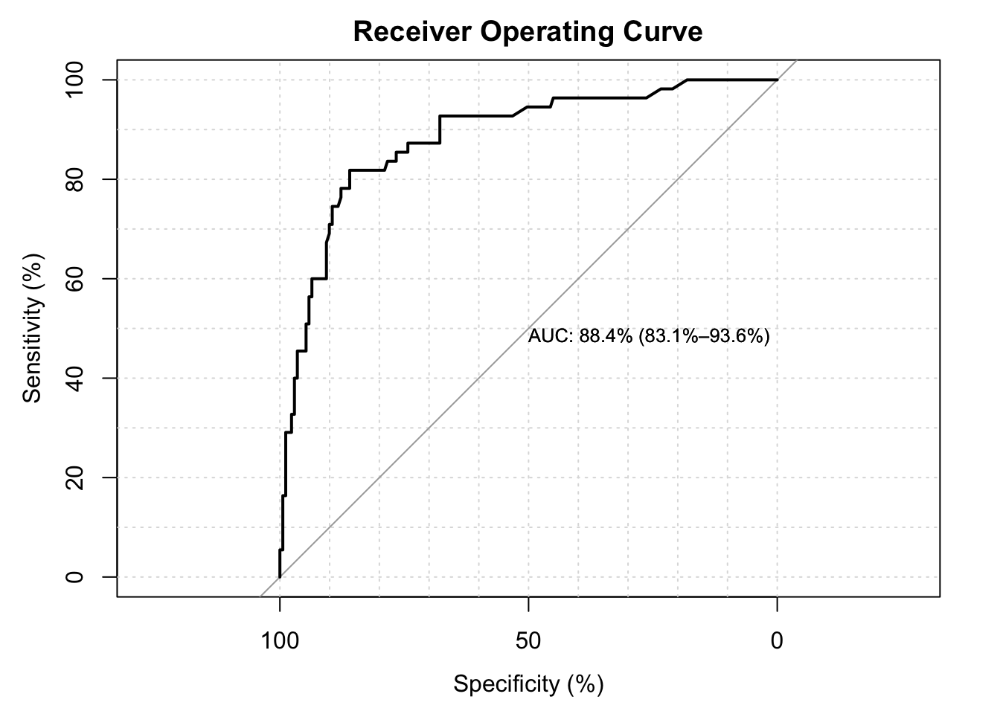

15 💻 Binary Logistic Regression
15.2 Background
The logistic model (or logit model) is used to model the probability of a certain class or event existing such as pass or fail, win or lose, alive or dead or healthy or sick. More specifically, binary logistic regression is used to model the relationship between a covariate or a set of covariates and an outcome variables which is a binary variable.
A binary variable is a categorical outcome has two categories or levels. In medical and health research, binary outcome variable is very common. Some example where the outcome is binary include:
- survival status when the status of cancer patients at the end of treatment are coded as either alive or dead
- relapse status when the status of a patient is coded as either relapse or not relapse
- satisfaction level when patients who come to clinics are asked if they are satisfied or not satisfied with the service
- glucose control when patients were categorized as either good control or poor control based on Hba1c
In a binary logistic regression model, the dependent variable has two levels (categorical). When the outcome variable has more than two levels or categories, the analysis are modeled by multinomial logistic regression and, if the multiple categories are ordered, by ordinal logistic regression (for example the proportional odds ordinal logistic model).
15.3 Further readings
There are a number of good references to help readers understand binary logistic regression better. The references that we list below also contains workflow that will be useful for readers when modelling logistic regression.
We highly recommend readers to read
15.4 Dataset
We will use a dataset named stroke.dta which in STATA format. These data come from a study of hospitalized stroke patients. They original dataset contain 12 variables but our main variables of interest are:
- status : Status of patient during hospitalization (alive or dead)
- gcs : Glasgow Coma Scale on admission (range from 3 to 15)
- stroke_type : IS (Ischaemic Stroke) or HS (Haemorrhagic Stroke)
- sex : female or male
- dm : History of Diabetes (yes or no)
- sbp : Systolic Blood Pressure (mmHg)
- age : age of patient on admission
The outcome variable is variable status. It is labelled as either dead or alive which is the outcome of each patient during hospitalization.
15.5 logit and logistic models
The simple binary logit and logistic models refer to a a model with only one covariate (also known as independent variable). For example, if the covariate is gcs (Glasgow Coma Scale), the simple logit model is written as:
\[\hat{g}(x)= ln\left[ \frac{\hat\pi(x)}{1 - {\hat\pi(x)}} \right]\]
where \(\hat{g}(x)\) is the log odds for death for a given value of gcs. And the odds for death for a given value of GCS is written as \(= \hat\beta_0 + \hat\beta_1(gcs)\)
And the simple logistic model is also written as:
\[\hat{\pi}(x) = \frac{exp^{\hat{\beta}_{0} + \hat{\beta}_{1}{gcs}}}{1 + exp^{\hat{\beta}_{0} + \hat{\beta}_{1}{gcs}}}\] The \(\pi(x) = E(Y|x)\) represents the conditional mean of \(Y\) given \(x\) when the logistic distribution is used. This is also simply known as the predicted probability of death for given value of gcs.
If we have decided (based on our clinical expertise and literature review) that a model that could explain death consists of gcs, stroke type, sex, dm, age and sbp, then the logit model can be expanded to:
\[\hat{g}(x) = \hat\beta_0 + \hat\beta_1(gcs) + \hat\beta_2(stroke type) + \hat\beta_3(sex)+ \hat\beta_4(dm) + \hat\beta_5(sbp) + \hat\beta_6(age)\] This is the odds for death given certain value of gcs, sbp and age and certain categories of stroke stype, sex and diabetes. While the probability of deaths is
\[\hat{\pi}(x) = \frac{exp^{\hat\beta_0 + \hat\beta_1(gcs) + \hat\beta_2(stroke type) + \hat\beta_3(sex)+ \hat\beta_4(dm) + \hat\beta_5(sbp) + \hat\beta_6(age)})}{1 + exp^{\hat\beta_0 + \hat\beta_1(gcs) + \hat\beta_2(stroke type) + \hat\beta_3(sex)+ \hat\beta_4(dm) + \hat\beta_5(sbp) + \hat\beta_6(age)}}\]
In many datasets, some of the independent variables are discrete, nominal scale variables such as race, sex, treatment group, and so forth. And because of that it is inappropriate to include them in the model as if they were interval scale variables. Though in many software, they are represented by numbers, but these numbers are used merely identifiers.
In this situation, we will use a method called design variables (or dummy variables). Suppose, for example, assuming that one of the independent variables is obesity type, which is now coded as “Class 1”, “Class 2” and “Class 3”. In this case, there are 3 levels or categories, hence two design variables (\(D - 1\)) are necessary, let’s say D1 and D2. One possible coding strategy is that when the patient is in “Class 1” then the two design variables, for D1 and D2 would both be set equal to zero. In this example, “Class 1” is the reference category. When the patient is in “Class 2”, then D1 is set as 1 and D2 as 0; when the patient is in “Class 3”, the we will set D1 as 0 and D2 and 1. All these coding assignment can be done automatically in the software. But to interpret, we must know which category is the reference.
15.6 Prepare environment for analysis
15.6.1 Creating a RStudio project
Start a new analysis task by creating a new RStudio project. To do this,
- Go to File
- Click New Project
- Choose New Directory or Existing Directory.
This directory points to the folder that usually contains the dataset to be analyzed. This is called as the working directory. Make sure there is a folder named as data in the folder. If there is not, create one. Make sure the dataset stroke.dta is inside the data folder in the working directory.
15.6.2 Loading libraries
Next, we will load the necessary packages. We will use 5 packages
- the built in stat package - to run Generalized Linear Model. This is already loaded by default.
- haven - to read SPSS, STATA and SAS dataset
- tidyverse - to perform data transformation
-
gtsummary - to provide nice results in a table
- broom - to tidy up the results
- LogisticDx - to do model assessment
- here - to ensure proper directory
To load these packages, we will use the function library():
library(haven)
library(tidyverse)
#> ── Attaching packages ─────────────────── tidyverse 1.3.2 ──
#> ✔ ggplot2 3.4.3 ✔ purrr 1.0.2
#> ✔ tibble 3.2.1 ✔ stringr 1.5.0
#> ✔ tidyr 1.3.0 ✔ forcats 1.0.0
#> ✔ readr 2.1.2
#> ── Conflicts ────────────────────── tidyverse_conflicts() ──
#> ✖ lubridate::as.difftime() masks base::as.difftime()
#> ✖ lubridate::date() masks base::date()
#> ✖ dplyr::filter() masks stats::filter()
#> ✖ kableExtra::group_rows() masks dplyr::group_rows()
#> ✖ lubridate::intersect() masks base::intersect()
#> ✖ dplyr::lag() masks stats::lag()
#> ✖ lubridate::setdiff() masks base::setdiff()
#> ✖ lubridate::union() masks base::union()
library(gtsummary)
#> #BlackLivesMatter
library(broom)
library(LogisticDx)
library(here)
#> here() starts at /Users/niccolo/Desktop/r_projects/sbd_24_2515.7 Read data
WE will read data in the working directory into our R environment. Remember the dataset is in the STATA format.
Take a peek at data. Check
- variable names
- variable types
glimpse(fatal)
#> Rows: 226
#> Columns: 7
#> $ sex <dbl+lbl> 1, 1, 1, 2, 1, 2, 2, 1, 2, 2, 1, 2…
#> $ status <dbl+lbl> 1, 1, 1, 1, 1, 1, 2, 1, 1, 2, 1, 1…
#> $ gcs <dbl> 13, 15, 15, 15, 15, 15, 13, 15, 15, 10…
#> $ sbp <dbl> 143, 150, 152, 215, 162, 169, 178, 180…
#> $ dm <dbl+lbl> 0, 0, 0, 1, 1, 1, 1, 0, 1, 1, 0, 1…
#> $ age <dbl> 50, 58, 64, 50, 65, 78, 66, 72, 61, 64…
#> $ stroke_type <dbl+lbl> 0, 0, 0, 0, 0, 0, 0, 0, 0, 0, 0, 0…15.8 Explore data
Variables sex, status, dm and stroke type are labelled variable. This means eventhough they are coded as numbers but the numbers represent the groups or categories or levels of the variables. Basically, they are categorical variables.
We will transform all of them to factor variables. We can quickly do this using the function across(). Below, we will transform all labelled variables to factor variables:
Now, we can look at the summary statistics
fatal %>%
tbl_summary() %>%
as_hux_table()|
Characteristic |
N = 226 |
|---|---|
| sex | |
| male | 97 (43%) |
| female | 129 (57%) |
| alive or dead | |
| alive | 171 (76%) |
| dead | 55 (24%) |
| earliest Glasgow Coma Scale | 15.0 (10.0, 15.0) |
| earliest systolic BP (mmHg) | 161 (143, 187) |
| diabetes (yes or no) | 138 (61%) |
| age in years | 61 (52, 69) |
| Ischaemic Stroke or Haemorrhagic | |
| Ischaemic Stroke | 149 (66%) |
| Haemorrhagic | 77 (34%) |
| n (%); Median (IQR) | |
or to get summary statistics for each status category:
fatal %>%
tbl_summary(by = status) %>%
as_hux_table()|
Characteristic |
alive, N = 171 |
dead, N = 55 |
|---|---|---|
| sex | ||
| male | 81 (47%) | 16 (29%) |
| female | 90 (53%) | 39 (71%) |
| earliest Glasgow Coma Scale | 15.0 (14.0, 15.0) | 8.0 (5.0, 11.0) |
| earliest systolic BP (mmHg) | 160 (143, 186) | 162 (140, 199) |
| diabetes (yes or no) | 100 (58%) | 38 (69%) |
| age in years | 61 (53, 68) | 62 (50, 73) |
| Ischaemic Stroke or Haemorrhagic | ||
| Ischaemic Stroke | 132 (77%) | 17 (31%) |
| Haemorrhagic | 39 (23%) | 38 (69%) |
| n (%); Median (IQR) | ||
15.9 Estimate the regression parameters
We now can perform binary logistic regression to estimate the regression parameters \(\hat\beta_s\) or the log odds. Usually, we can do this in two steps:
- The simple binary logistic regression or the univariable logistic regression. In this analysis, there is only one independent variable or covariate in the model. This is also known as the crude or unadjusted analysis.
- The multiple binary logistic regression or the multivariable logistic regression. Here, we expand our model and include two or more independent variables (covariates). This is a adjusted model and we can obtain the estimate of a particular covariate independent of the other covariates in the model.
15.10 Simple binary logistic regression
The simple binary logistic regression has a dependent variable and only one independent (covariate) variable. in our dataset, for example, we can have
- status as the dependent variable.
- gcs as the independent variable.
The independent variable can be a numerical or a categorical variable. To estimate the log odds (the regression parameters, \(\beta\)) for the covariate Glasgow Coma Scale (GCS), we can write the logit model as:
\[log\frac{p(status = dead)}{1 - p(status = dead)} = \hat\beta_0 + \hat\beta_1(gcs)\]
In R, we use the glm() function to estimate the regression parameters and other parameters of interest. Let’s run the model with gcs as the covariate and name the model as fatal_glm_1
To get the summarized result of the model, we will use the summary() function:
summary(fatal_glm_1)
#>
#> Call:
#> glm(formula = status ~ gcs, family = binomial(link = "logit"),
#> data = fatal)
#>
#> Deviance Residuals:
#> Min 1Q Median 3Q Max
#> -2.1179 -0.3921 -0.3921 -0.3921 2.2820
#>
#> Coefficients:
#> Estimate Std. Error z value Pr(>|z|)
#> (Intercept) 3.29479 0.60432 5.452 0.0000000497803390
#> gcs -0.38811 0.05213 -7.446 0.0000000000000964
#>
#> (Intercept) ***
#> gcs ***
#> ---
#> Signif. codes:
#> 0 '***' 0.001 '**' 0.01 '*' 0.05 '.' 0.1 ' ' 1
#>
#> (Dispersion parameter for binomial family taken to be 1)
#>
#> Null deviance: 250.83 on 225 degrees of freedom
#> Residual deviance: 170.92 on 224 degrees of freedom
#> AIC: 174.92
#>
#> Number of Fisher Scoring iterations: 5To get the model summary in a data frame format, so we can edit more easily, we can use the tidy() function from the broom package. The package also contains other functions to provide other parameters useful for us later.
The function conf.int() will provide the confidence intervals (CI). The default is set at the \(95%\) level:
tidy(fatal_glm_1, conf.int = TRUE)
#> # A tibble: 2 × 7
#> term estimate std.error statistic p.value conf.low
#> <chr> <dbl> <dbl> <dbl> <dbl> <dbl>
#> 1 (Intercept) 3.29 0.604 5.45 4.98e- 8 2.17
#> 2 gcs -0.388 0.0521 -7.45 9.64e-14 -0.497
#> # ℹ 1 more variable: conf.high <dbl>The estimates here are the log odds for death for a given value of gcs. In this example, each unit increase in gcs, the crude or unadjusted log odds for death due to stroke change by a factor \(-0.388\) with \(95%\) CI ranges from \(-0.497 and -0.292\).
Now, let’s use another covariate, stroke_type. Stroke type has 2 levels or categories; Haemorrhagic Stroke (HS) and Ischaemic Stroke (IS). HS is known to cause higher risk for deaths in stroke. We will model stroke type (stroke_type), name the model as fatal_glm_2 and show the result using tidy()
fatal_glm_2 <-
glm(status ~ stroke_type,
data = fatal,
family = binomial(link = 'logit'))
tidy(fatal_glm_2, conf.int = TRUE)
#> # A tibble: 2 × 7
#> term estimate std.error statistic p.value conf.low
#> <chr> <dbl> <dbl> <dbl> <dbl> <dbl>
#> 1 (Intercept) -2.05 0.258 -7.95 1.80e-15 -2.59
#> 2 stroke_typ… 2.02 0.344 5.88 4.05e- 9 1.36
#> # ℹ 1 more variable: conf.high <dbl>It seems that patients with Haemorrhagic Stroke (HS) had higher log odds for death during admission - by a factor \(2.02\) - than patients with Ischaemic Stroke (IS).
15.11 Multiple binary logistic regression
The is strong motivation to include other covariates in the model. This is because
- It is unlikely that only one variable (gcs or stroke type) that is related with stroke. For example, cardiovascular disease has many factors that affect the outcome. So, it makes more sense to consider adding other seemingly important independent variable in the model.
- by adding more covariates in the model, we can estimate the adjusted log odds. These are the log odds of a particular covariate independent of other covariates.
- we can add other covariate to adjust for the confounding effects
- interaction (the product of two covariates) can also be estimated
To add or not to add variables is a big subject on its own. Usually it is governed by clinical experience, subject matter experts and some preliminary analysis.
Let’s expand our model and include gcs, stroke type, sex, dm, sbp and age in the model. We will name this model as fatal_mv. To run this model and get the estimates in R:
fatal_mv1 <-
glm(status ~ gcs + stroke_type + sex + dm + sbp + age,
data = fatal,
family = binomial(link = 'logit'))
summary(fatal_mv1)
#>
#> Call:
#> glm(formula = status ~ gcs + stroke_type + sex + dm + sbp + age,
#> family = binomial(link = "logit"), data = fatal)
#>
#> Deviance Residuals:
#> Min 1Q Median 3Q Max
#> -2.3715 -0.4687 -0.3280 -0.1921 2.5150
#>
#> Coefficients:
#> Estimate Std. Error z value
#> (Intercept) -0.1588269 1.6174965 -0.098
#> gcs -0.3284640 0.0557574 -5.891
#> stroke_typeHaemorrhagic 1.2662764 0.4365882 2.900
#> sexfemale 0.4302901 0.4362742 0.986
#> dmyes 0.4736670 0.4362309 1.086
#> sbp 0.0008612 0.0060619 0.142
#> age 0.0242321 0.0154010 1.573
#> Pr(>|z|)
#> (Intercept) 0.92178
#> gcs 0.00000000384 ***
#> stroke_typeHaemorrhagic 0.00373 **
#> sexfemale 0.32399
#> dmyes 0.27756
#> sbp 0.88703
#> age 0.11562
#> ---
#> Signif. codes:
#> 0 '***' 0.001 '**' 0.01 '*' 0.05 '.' 0.1 ' ' 1
#>
#> (Dispersion parameter for binomial family taken to be 1)
#>
#> Null deviance: 250.83 on 225 degrees of freedom
#> Residual deviance: 159.34 on 219 degrees of freedom
#> AIC: 173.34
#>
#> Number of Fisher Scoring iterations: 5We could get a cleaner result in a data frame format (and you can edit in spreadsheet easily) by using tidy():
log_odds <- tidy(fatal_mv1,
conf.int = TRUE)
log_odds
#> # A tibble: 7 × 7
#> term estimate std.error statistic p.value conf.low
#> <chr> <dbl> <dbl> <dbl> <dbl> <dbl>
#> 1 (Intercept) -1.59e-1 1.62 -0.0982 9.22e-1 -3.38
#> 2 gcs -3.28e-1 0.0558 -5.89 3.84e-9 -0.444
#> 3 stroke_type… 1.27e+0 0.437 2.90 3.73e-3 0.411
#> 4 sexfemale 4.30e-1 0.436 0.986 3.24e-1 -0.420
#> 5 dmyes 4.74e-1 0.436 1.09 2.78e-1 -0.368
#> 6 sbp 8.61e-4 0.00606 0.142 8.87e-1 -0.0110
#> 7 age 2.42e-2 0.0154 1.57 1.16e-1 -0.00520
#> # ℹ 1 more variable: conf.high <dbl>We could see in the multivariable model, that
- with one unit increase in Glasgow Coma Scale (GCS), the log odds for death during hospitalization equals to \(-0.328\), adjusting for other covariates
- patients with HS has \(1.266\) times the log odds for death as compared to patients with IS, adjusting for other covariates.
- female patients have \(0.430\) times the log odds for death as compared to male patients, adjusting for other covariates
- patients with diabetes mellitus had \(0.474\) times the log odds for deaths as compared to patients with no diabetes mellitus
- With one mmHg increase in systolic blood pressure, the log odds for deaths change by a factor of \(0.00086\), when adjusting for other variables.
- with an increase in one year of age, the log odds for deaths change by a factor of \(0.024\), when adjusting for other variables.
15.12 Convert the log odds to odds ratio
For lay person, it is difficult to interpret the log odds. It is easier to interpret using the odds ratio. To do this, we can use the argument exponentiate = TRUE in the tidy() function. However, we also know that the odds ratio can be easily calculate by \(\exp^{\beta_i}\)
odds_ratio <- tidy(fatal_mv1,
exponentiate = TRUE,
conf.int = TRUE)
odds_ratio
#> # A tibble: 7 × 7
#> term estimate std.error statistic p.value conf.low
#> <chr> <dbl> <dbl> <dbl> <dbl> <dbl>
#> 1 (Intercept) 0.853 1.62 -0.0982 9.22e-1 0.0341
#> 2 gcs 0.720 0.0558 -5.89 3.84e-9 0.641
#> 3 stroke_type… 3.55 0.437 2.90 3.73e-3 1.51
#> 4 sexfemale 1.54 0.436 0.986 3.24e-1 0.657
#> 5 dmyes 1.61 0.436 1.09 2.78e-1 0.692
#> 6 sbp 1.00 0.00606 0.142 8.87e-1 0.989
#> 7 age 1.02 0.0154 1.57 1.16e-1 0.995
#> # ℹ 1 more variable: conf.high <dbl>15.13 Making inference
Let us combine the results from the log odds and the odds ratio and rename the table properly.
tab_logistic <- bind_cols(log_odds, odds_ratio)
#> New names:
#> • `term` -> `term...1`
#> • `estimate` -> `estimate...2`
#> • `std.error` -> `std.error...3`
#> • `statistic` -> `statistic...4`
#> • `p.value` -> `p.value...5`
#> • `conf.low` -> `conf.low...6`
#> • `conf.high` -> `conf.high...7`
#> • `term` -> `term...8`
#> • `estimate` -> `estimate...9`
#> • `std.error` -> `std.error...10`
#> • `statistic` -> `statistic...11`
#> • `p.value` -> `p.value...12`
#> • `conf.low` -> `conf.low...13`
#> • `conf.high` -> `conf.high...14`
tab_logistic %>%
select(term...1, estimate...2, std.error...3,
estimate...9, conf.low...13, conf.high...14 ,p.value...5) %>%
rename(covariate = term...1,
log_odds = estimate...2,
SE = std.error...3,
odds_ratio = estimate...9,
lower_OR = conf.low...13,
upper_OR = conf.high...14,
p.val = p.value...5)
#> # A tibble: 7 × 7
#> covariate log_odds SE odds_ratio lower_OR upper_OR
#> <chr> <dbl> <dbl> <dbl> <dbl> <dbl>
#> 1 (Intercept) -1.59e-1 1.62 0.853 0.0341 20.3
#> 2 gcs -3.28e-1 0.0558 0.720 0.641 0.799
#> 3 stroke_type… 1.27e+0 0.437 3.55 1.51 8.45
#> 4 sexfemale 4.30e-1 0.436 1.54 0.657 3.69
#> 5 dmyes 4.74e-1 0.436 1.61 0.692 3.87
#> 6 sbp 8.61e-4 0.00606 1.00 0.989 1.01
#> 7 age 2.42e-2 0.0154 1.02 0.995 1.06
#> # ℹ 1 more variable: p.val <dbl>In the model, it means that:
- if gcs increases by 1 unit (when stroke type is adjusted), the log odds for death changes by a factor \(-0.32\) or the odds for death changes by a factor \(0.72\) (odds for death reduces for \(28\%\)). The the \(95\%CI\) are between \(21\%,36\%\), adjusting for other covariates.
- patients with HS has \(3.55\%\) times higher odds for stroke deaths - with \(95\%CI : 17\%, 85\%\) - as compared to patients with HS, adjusting for other independent variables.
- female patients have \(53\%\) higher odds for death as compared to female patients (\(p = 0.154\)), adjusting for other covariates
- patients with diabetes mellitus had \(60.6\%\) higher odds for deaths compared to patients with no diabetes mellitus though the p value is above \(5\%\) (\(p = 0.642\%\))
- With one mmHg increase in systolic blood pressure, the odds for death change by a factor \(1.00086\), when adjusting for other variables. The p value is also larger than \(5\%\).
- with an increase in one year of age, the odds for deaths increase by a factor of \(1.025\), when adjusting for other variables. However, the p value is \(0.115\)
15.14 Model comparison
It is not advisable to assess the important of variables based on their p-values or the Wald statistics. The better way is to use likelihood ratio to compare models and assess the importance of variables.
For example, is there any statistical difference between model 1 (fatal_mv) and model 2 (fatal_glm_1) if we set the level of significance at \(5\%\)?
anova( fatal_glm_1, fatal_mv1, test = 'Chisq')
#> Analysis of Deviance Table
#>
#> Model 1: status ~ gcs
#> Model 2: status ~ gcs + stroke_type + sex + dm + sbp + age
#> Resid. Df Resid. Dev Df Deviance Pr(>Chi)
#> 1 224 170.92
#> 2 219 159.34 5 11.582 0.04098 *
#> ---
#> Signif. codes:
#> 0 '***' 0.001 '**' 0.01 '*' 0.05 '.' 0.1 ' ' 1Both models are different statistically (at \(5\%\) level). Hence, we prefer to keep model fatal_mv1.
Now let’s be economical, and just keep gcs, stroke type and age in the model. And let’s name this model as fatal_mv2
And perform model comparison again
anova( fatal_mv1,
fatal_mv2, test = 'Chisq')
#> Analysis of Deviance Table
#>
#> Model 1: status ~ gcs + stroke_type + sex + dm + sbp + age
#> Model 2: status ~ gcs + stroke_type + age
#> Resid. Df Resid. Dev Df Deviance Pr(>Chi)
#> 1 219 159.34
#> 2 222 161.51 -3 -2.1743 0.537The p-value is above the threshold of \(5\%\), so we can not reject the null hypothesis that say both models are not statistically different. So by obeying the Occam’s razor principle, we will choose a simpler model that is model fatal_mv2 for further exploration.
15.15 Adding an interaction term
Interaction effects occur when the effect of one variable depends on the value of another variable. Interaction effects are common in regression analysis, ANOVA, and designed experiments.
Interaction involves two risk factors (and their effect on one disease outcome). If the effect of one risk factor is the same within strata defined by the other, then there is NO interaction. When the effect of one risk factor is different within strata defined by the other, then there is an interaction (biological)
(Statistical) interaction can be measured based on the ways that risks are calculated (modeling). The presence of interaction based on measurements is called statistical interaction, and inherently it may not reflect the true biological interaction.
Let’s add an interaction between stroke type and diabetes:
fatal_mv2_ia <-
glm(status ~ gcs + stroke_type + stroke_type:gcs + age,
data = fatal,
family = binomial(link = 'logit'))
tidy(fatal_mv2_ia)
#> # A tibble: 5 × 5
#> term estimate std.error statistic p.value
#> <chr> <dbl> <dbl> <dbl> <dbl>
#> 1 (Intercept) 0.508 1.37 0.371 7.10e-1
#> 2 gcs -0.320 0.0800 -4.01 6.19e-5
#> 3 stroke_typeHaemorrha… 1.61 1.30 1.24 2.17e-1
#> 4 age 0.0236 0.0147 1.60 1.09e-1
#> 5 gcs:stroke_typeHaemo… -0.0347 0.111 -0.312 7.55e-1\[\hat{g}(x) = \hat\beta_0 + \hat\beta_1(gcs) + \hat\beta_2(stroke type) + \hat\beta_3(age)+ \hat\beta_4(gcs \times stroke_type)\]
To decide if an interaction term should stay in the model, we suggest you to consider the biological and statistical significance. If you think the interaction justifies both reasons, then it is preferred you keep the interaction term in the model. For example, for our model:
- the coefficient for the interaction term for stroke type and gcs is not significant at %5%$ level.
- after getting further advice from the stroke experts, we believe that the effect of gcs on stroke death is not largely different between different stroke type
And because of both reasons, we have decided not to keep the interaction for gcs and stroke type in the model.
15.16 Prediction from binary logistic regression
We can use the broom::augment() function to calculate the
- log odds
- probability
- residuals
- hat values
- Cooks distance
- standardized residuals
15.16.1 Predict the log odds
To obtain the .fitted column (representing the estimated log odds for death) for each patient, we can run:
log_odds_mv2 <- augment(fatal_mv2)
log_odds_mv2 %>%
slice(1:10)
#> # A tibble: 10 × 10
#> status gcs stroke_type age .fitted .resid .std.resid
#> <fct> <dbl> <fct> <dbl> <dbl> <dbl> <dbl>
#> 1 alive 13 Ischaemic S… 50 -2.49 -0.398 -0.400
#> 2 alive 15 Ischaemic S… 58 -2.98 -0.314 -0.315
#> 3 alive 15 Ischaemic S… 64 -2.84 -0.337 -0.338
#> 4 alive 15 Ischaemic S… 50 -3.17 -0.287 -0.288
#> 5 alive 15 Ischaemic S… 65 -2.82 -0.341 -0.342
#> 6 alive 15 Ischaemic S… 78 -2.51 -0.395 -0.397
#> 7 dead 13 Ischaemic S… 66 -2.12 2.11 2.12
#> 8 alive 15 Ischaemic S… 72 -2.65 -0.369 -0.370
#> 9 alive 15 Ischaemic S… 61 -2.91 -0.325 -0.326
#> 10 dead 10 Ischaemic S… 64 -1.15 1.69 1.70
#> # ℹ 3 more variables: .hat <dbl>, .sigma <dbl>,
#> # .cooksd <dbl>The slice() gives the snapshot of the data. In this case, we choose the first 10 patients.
15.16.2 Predict the probabilities
To obtain the .fitted column (representing the estimated probabilities for death) for each patient, we can run:
prob_mv2 <-
augment(fatal_mv2,
type.predict = "response")
prob_mv2 %>%
slice(1:10)
#> # A tibble: 10 × 10
#> status gcs stroke_type age .fitted .resid .std.resid
#> <fct> <dbl> <fct> <dbl> <dbl> <dbl> <dbl>
#> 1 alive 13 Ischaemic S… 50 0.0763 -0.398 -0.400
#> 2 alive 15 Ischaemic S… 58 0.0482 -0.314 -0.315
#> 3 alive 15 Ischaemic S… 64 0.0551 -0.337 -0.338
#> 4 alive 15 Ischaemic S… 50 0.0403 -0.287 -0.288
#> 5 alive 15 Ischaemic S… 65 0.0564 -0.341 -0.342
#> 6 alive 15 Ischaemic S… 78 0.0750 -0.395 -0.397
#> 7 dead 13 Ischaemic S… 66 0.107 2.11 2.12
#> 8 alive 15 Ischaemic S… 72 0.0658 -0.369 -0.370
#> 9 alive 15 Ischaemic S… 61 0.0516 -0.325 -0.326
#> 10 dead 10 Ischaemic S… 64 0.241 1.69 1.70
#> # ℹ 3 more variables: .hat <dbl>, .sigma <dbl>,
#> # .cooksd <dbl>15.17 Model fitness
We will assess the overall model fitness by checking the
- the area under the curve
- the Hosmer-Lemeshow test
- the modidied Hosmer-Lemeshow test
- the Oseo Rojek test
The p-values of bigger than 0.05 indicates that there is no significant difference between the observed data and the predicted data (from our model). That supports the good fit of the model.
fit_m <- gof(fatal_mv2,
g = 8)
#> Setting levels: control = 0, case = 1
#> Setting direction: controls < cases The area under the curve is \(87.2\%\). The values of above 80 are considered to have good discriminating effect.
fit_m$gof
#> test stat val df pVal
#> 1: HL chiSq 4.622183 6 0.5930997
#> 2: mHL F 1.071882 7 0.3844230
#> 3: OsRo Z -0.501724 NA 0.6158617
#> 4: SstPgeq0.5 Z 1.348843 NA 0.1773873
#> 5: SstPl0.5 Z 1.516578 NA 0.1293733
#> 6: SstBoth chiSq 4.119387 2 0.1274931
#> 7: SllPgeq0.5 chiSq 1.579811 1 0.2087879
#> 8: SllPl0.5 chiSq 2.311910 1 0.1283862
#> 9: SllBoth chiSq 2.341198 2 0.3101811The Hosmer Lemeshow, modified Hosmer Lemeshow and Oseo Rojek are all above \(5\%\) values which are supportive of good fit of the model.
15.18 Presentation
The gtsummary package has a useful function tbld_regression() to produce a formatted table suitable for publication.
This is the table for adjusted log odds ratio:
tbl_regression(fatal_mv2)| Characteristic | log(OR)1 | 95% CI1 | p-value |
|---|---|---|---|
| earliest Glasgow Coma Scale | -0.34 | -0.45, -0.24 | |
| Ischaemic Stroke or Haemorrhagic | |||
| Ischaemic Stroke | — | — | |
| Haemorrhagic | 1.2 | 0.38, 2.1 | 0.004 |
| age in years | 0.02 | 0.00, 0.05 | 0.11 |
| 1 OR = Odds Ratio, CI = Confidence Interval | |||
And this is the table for adjusted odds ratio:
tbl_regression(fatal_mv2, exponentiate = TRUE)| Characteristic | OR1 | 95% CI1 | p-value |
|---|---|---|---|
| earliest Glasgow Coma Scale | 0.71 | 0.64, 0.79 | |
| Ischaemic Stroke or Haemorrhagic | |||
| Ischaemic Stroke | — | — | |
| Haemorrhagic | 3.40 | 1.46, 7.97 | 0.004 |
| age in years | 1.02 | 1.00, 1.05 | 0.11 |
| 1 OR = Odds Ratio, CI = Confidence Interval | |||